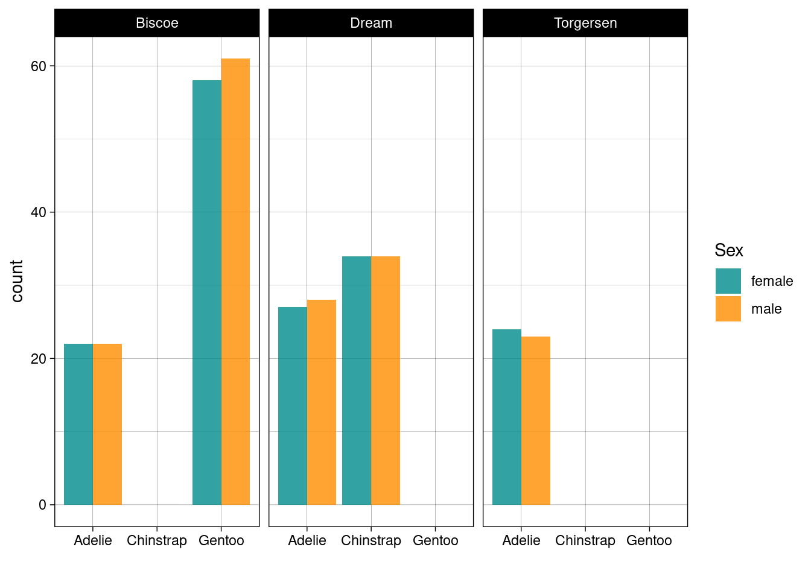
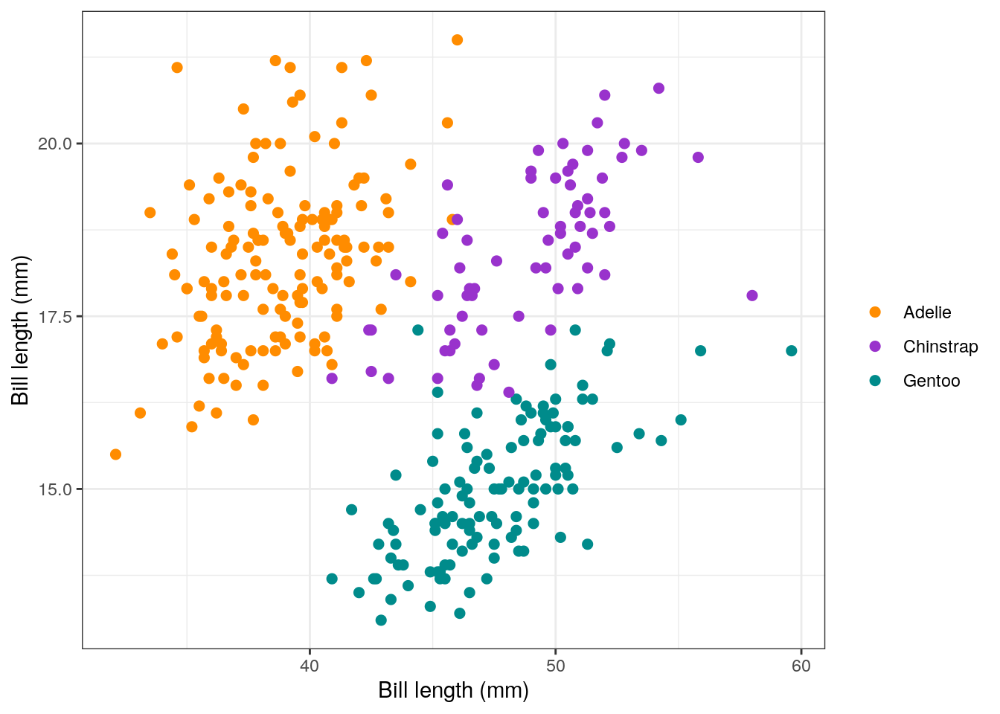
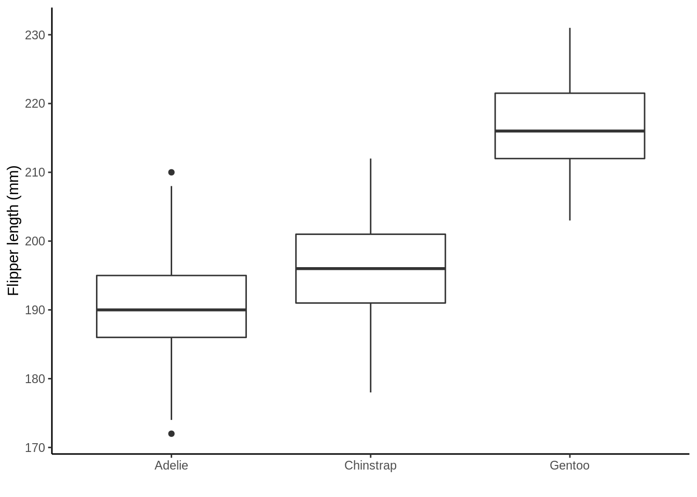
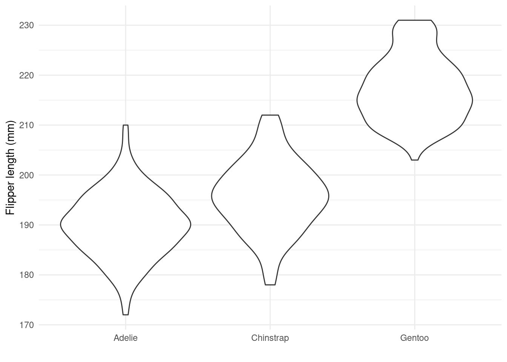
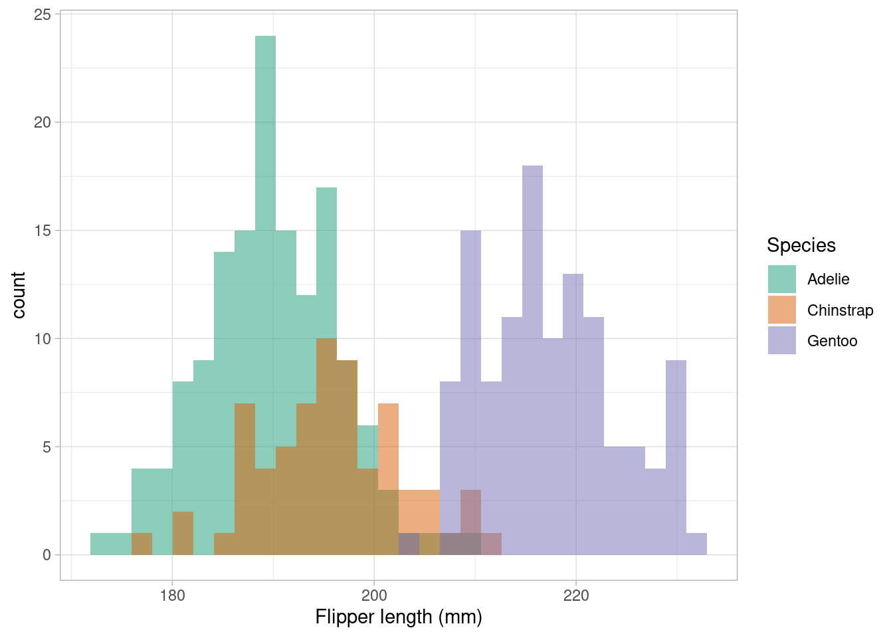

2 Data exploration and visualization
So now you've been introduced to R and RStudio let's get going with some data manipulation and visualization. Exploring and visualising your data is one of the most important steps. It's also one of the simplest!
You'll not find anyone who's not made the mistake of taking their data for granted. Just because someone says it's so NEVER trust that that's the case. From typos, to NAs, through -999 and let's not even talk dates, your data will always have a surprise in store for you.
2.1 Learning objectives
- Define and discuss Māori Data Sovereignty principles
- Define data sovereignty and explain this in relation to a researcher's obligation when collecting, displaying, and analysing data
- Carry out and interpret the outputs of basic exploratory data analysis using in-built R functions
- Create and communicate informative data visualisations using
R - Discuss and critique data visualisations
2.2 Data sovereignty
"For Indigenous peoples, historical encounters with statistics have been fraught, and none more so than when involving official data produced as part of colonial attempts at statecraft."
2.2.1 Māori Data Sovereignty principles
"Māori Data Sovereignty has emerged as a critical policy issue as Aotearoa New Zealand develops world-leading linked administrative data resources."
“Māori data refers to data produced by Māori or that is about Māori and the environments we have relationships with."
Data is a “potential taonga, something precious that needs to be maintained, in relation to its utility”
Article Two of the Treaty of Waitangi obliges the Government to actively protect taonga, consult with Māori in respect of taonga, give effect to the principle of partnership and recognize Māori rangatiratanga over taonga. Factors that relate to how communities might recognize the taonga nature of any dataset include
- provenance of the data: does the dataset come from a significant Māori source?
- opportunity for the data: could the dataset support Māori aspirations for their people or their whenua (land)?
- utility of the data: does the dataset have multiple uses?
Māori Data Sovereignty principles inform the recognition of Māori rights and interests in data, and promote the ethical use of data to enhance Māori wellbeing:
Rangatiratanga (authority)
- Māori have an inherent right to exercise control over Māori data and Māori data ecosystems. This right includes, but is not limited to, the creation, collection, access, analysis, interpretation, management, security, dissemination, use and reuse of Māori data.
- Decisions about the physical and virtual storage of Māori data shall enhance control for current and future generations. Whenever possible, Māori data shall be stored in Aotearoa New Zealand.
- Māori have the right to data that is relevant and empowers sustainable self-determination and effective self-governance
Whakapapa (relationships)
- All data has a whakapapa (genealogy). Accurate metadata should, at minimum, provide information about the provenance of the data, the purpose(s) for its collection, the context of its collection, and the parties involved.
- The ability to disaggregate Māori data increases its relevance for Māori communities and iwi. Māori data shall be collected and coded using categories that prioritise Māori needs and aspirations.
- Current decision-making over data can have long-term consequences, good and bad, for future generations of Māori. A key goal of Māori data governance should be to protect against future harm.
Whanaungatanga (obligations)
- Individuals’ rights (including privacy rights), risks and benefits in relation to data need to be balanced with those of the groups of which they are a part. In some contexts, collective Māori rights will prevail over those of individuals.
- Individuals and organisations responsible for the creation, collection, analysis, management, access, security or dissemination of Māori data are accountable to the communities, groups and individuals from whom the data derive
Kotahitanga (collective benefit)
- Data ecosystems shall be designed and function in ways that enable Māori to derive individual and collective benefit.
- Build capacity. Māori Data Sovereignty requires the development of a Māori workforce to enable the creation, collection, management, security, governance and application of data.
- Connections between Māori and other Indigenous peoples shall be supported to enable the sharing of strategies, resources and ideas in relation to data, and the attainment of common goals.
Manaakitanga (reciprocity)
- The collection, use and interpretation of data shall uphold the dignity of Māori communities, groups and individuals. Data analysis that stigmatises or blames Māori can result in collective and individual harm and should be actively avoided.
- Free, prior and informed consent shall underpin the collection and use of all data from or about Māori. Less defined types of consent shall be balanced by stronger governance arrangements.
Kaitiakitanga (guardianship)
- Māori data shall be stored and transferred in such a way that it enables and reinforces the capacity of Māori to exercise kaitiakitanga over Māori data.
- Ethics. Tikanga, kawa (protocols) and mātauranga (knowledge) shall underpin the protection, access and use of Māori data.
- Māori shall decide which Māori data shall be controlled (tapu) or open (noa) access.

The Te Mana o te Raraunga Model was developed to align Māori concepts with data rights and interests, and guide agencies in the appropriate use of Māori data
- Whakapapa and whanaungatanga: recognising the connectedness between the material, natural and spiritual worlds
- Rangatiratanga: Māori rights to own, access, control and possess data from them or about them and their environs
- Kotahitanga: collective vision and unity of purpose
- Manaakitanga: ethical data use to progress Māori aspirations for wellbeing
- Kaitiakitanga: sustainable data stewardship
Resources
2.3 Data wrangling and manipulation
tidy data
"Tidy datasets are all alike, but every messy dataset is messy in its own way."
There are three interrelated rules which make a dataset tidy:
- Each variable must have its own column
- Each observation must have its own row
- Each value must have its own cell

Illustration from the Openscapes blog Tidy Data for reproducibility, efficiency, and collaboration by Julia Lowndes and Allison Horst
Why ensure that your data is tidy?
Consistency: using a consistent format aids learning and reproducibility
Simplicity: it's a format that is well understood by
R
"Tidy datasets are easy to manipulate, model and visualize, and have a specific structure: each variable is a column, each observation is a row, and each type of observational unit is a table. This framework makes it easy to tidy messy datasets because only a small set of tools are needed to deal with a wide range of un-tidy datasets."
2.3.1 Introuducing the Palmer penguins
library(palmerpenguins) ## contains some nice penguin data
penguins## # A tibble: 344 x 8
## species island bill_length_mm bill_depth_mm flipper_length_mm body_mass_g
## <fct> <fct> <dbl> <dbl> <int> <int>
## 1 Adelie Torgersen 39.1 18.7 181 3750
## 2 Adelie Torgersen 39.5 17.4 186 3800
## 3 Adelie Torgersen 40.3 18 195 3250
## 4 Adelie Torgersen NA NA NA NA
## 5 Adelie Torgersen 36.7 19.3 193 3450
## 6 Adelie Torgersen 39.3 20.6 190 3650
## 7 Adelie Torgersen 38.9 17.8 181 3625
## 8 Adelie Torgersen 39.2 19.6 195 4675
## 9 Adelie Torgersen 34.1 18.1 193 3475
## 10 Adelie Torgersen 42 20.2 190 4250
## # … with 334 more rows, and 2 more variables: sex <fct>, year <int>So, what does this show us?
A tibble: 344 x 8: Atibbleis a specific kind of data frame inR. Thepenguindataset has344rows (i.e., 344 different observations). Here, each observation corresponds to a penguin.8columns corresponding to 3 variables describing each observation.species,island,bill_length_mm,bill_depth_mm,flipper_length_mm,body_mass_g,sex, andyearare the different variables of this dataset.We then have a preview of the first 10 rows of observations corresponding to the first 10 penguins. ``
... with 334 more rowsindicates there are 334 more rows to see, but these have not been printed (likely as it would clog our screen)
To learn more about the penguins read the paper that talks all about the data collection.
2.3.2 Common dataframe manipulations in the tidyverse, using dplyr and tidyr
Even from these first few rows of data we can see that there are some NA values. Let's count the number of NAs. Remember the %>% operator? Here we're going to be introduced to a few new things
- the
apply()function, - the
is.na()function, and - how
Rdeals withlogicalvalues!
library(tidyverse)
penguins %>%
apply(.,2,is.na) %>%
apply(.,2,sum)## species island bill_length_mm bill_depth_mm
## 0 0 2 2
## flipper_length_mm body_mass_g sex year
## 2 2 11 0There's lot going on in that code! Let's break it down
- Take
penguinsthen - Use
penguinsas an input to theapply()function (this is specified as the first argument using the.) - Now the
apply()function takes 3 arguments:- the data object you want it to apply something to (in our case
penguins) - the margin you want to apply that something to; 1 stands for rows and 2 stands for columns, and
- the function you want it to apply (in our case
is.na()).
- the data object you want it to apply something to (in our case
- So the second line of code is asking
Rto apply theis.na()function over the columns ofpenguinsis.na()asks for each value it's fed is it anNAvalue; it returns aTRUEif so and aFALSEotherwise
- The output from the first
apply()is then fed to the secondapply()(using the.). Thesum()function then add them up!Rtreats aTRUEas a 1 and aFALSEas a 0.
So how many NAs do you think there are!
Doesn't help much. To
Now we know there are NA values throughout the data let's remove then and create a new NA free version called penguins_nafree. There is a really handy tidyverse (dplyr) function for this!
penguins_nafree <- penguins %>% drop_na()
penguins_nafree## # A tibble: 333 x 8
## species island bill_length_mm bill_depth_mm flipper_length_mm body_mass_g
## <fct> <fct> <dbl> <dbl> <int> <int>
## 1 Adelie Torgersen 39.1 18.7 181 3750
## 2 Adelie Torgersen 39.5 17.4 186 3800
## 3 Adelie Torgersen 40.3 18 195 3250
## 4 Adelie Torgersen 36.7 19.3 193 3450
## 5 Adelie Torgersen 39.3 20.6 190 3650
## 6 Adelie Torgersen 38.9 17.8 181 3625
## 7 Adelie Torgersen 39.2 19.6 195 4675
## 8 Adelie Torgersen 41.1 17.6 182 3200
## 9 Adelie Torgersen 38.6 21.2 191 3800
## 10 Adelie Torgersen 34.6 21.1 198 4400
## # … with 323 more rows, and 2 more variables: sex <fct>, year <int>Below are some other useful manipulation functions; have a look at the outputs and run them yourselves and see if you can work out what they're doing.
filter(penguins_nafree, island == "Torgersen" )## # A tibble: 47 x 8
## species island bill_length_mm bill_depth_mm flipper_length_mm body_mass_g
## <fct> <fct> <dbl> <dbl> <int> <int>
## 1 Adelie Torgersen 39.1 18.7 181 3750
## 2 Adelie Torgersen 39.5 17.4 186 3800
## 3 Adelie Torgersen 40.3 18 195 3250
## 4 Adelie Torgersen 36.7 19.3 193 3450
## 5 Adelie Torgersen 39.3 20.6 190 3650
## 6 Adelie Torgersen 38.9 17.8 181 3625
## 7 Adelie Torgersen 39.2 19.6 195 4675
## 8 Adelie Torgersen 41.1 17.6 182 3200
## 9 Adelie Torgersen 38.6 21.2 191 3800
## 10 Adelie Torgersen 34.6 21.1 198 4400
## # … with 37 more rows, and 2 more variables: sex <fct>, year <int>summarise(penguins_nafree, avgerage_bill_length = mean(bill_length_mm))## # A tibble: 1 x 1
## avgerage_bill_length
## <dbl>
## 1 44.0group_by(penguins_nafree, species)## # A tibble: 333 x 8
## # Groups: species [3]
## species island bill_length_mm bill_depth_mm flipper_length_mm body_mass_g
## <fct> <fct> <dbl> <dbl> <int> <int>
## 1 Adelie Torgersen 39.1 18.7 181 3750
## 2 Adelie Torgersen 39.5 17.4 186 3800
## 3 Adelie Torgersen 40.3 18 195 3250
## 4 Adelie Torgersen 36.7 19.3 193 3450
## 5 Adelie Torgersen 39.3 20.6 190 3650
## 6 Adelie Torgersen 38.9 17.8 181 3625
## 7 Adelie Torgersen 39.2 19.6 195 4675
## 8 Adelie Torgersen 41.1 17.6 182 3200
## 9 Adelie Torgersen 38.6 21.2 191 3800
## 10 Adelie Torgersen 34.6 21.1 198 4400
## # … with 323 more rows, and 2 more variables: sex <fct>, year <int>Often we want to summarise variables by different groups (factors). Below we
- Take the
penguins_nafreedata then - Use this and apply the
group_by()function to group byspecies - Use this output and apply the
summarize()function to calculate the mean (using (mean()) bill length (bill_length_mm) of each group (species), calling the resulting numberavgerage_bill_length
penguins_nafree %>%
group_by(species) %>%
summarise(avgerage_bill_length = mean(bill_length_mm))## # A tibble: 3 x 2
## species avgerage_bill_length
## * <fct> <dbl>
## 1 Adelie 38.8
## 2 Chinstrap 48.8
## 3 Gentoo 47.6We can also group by multiple factors, for example,
penguins_nafree %>%
group_by(island,species) %>%
summarise(avgerage_bill_length = mean(bill_length_mm))## `summarise()` has grouped output by 'island'. You can override using the `.groups` argument.## # A tibble: 5 x 3
## # Groups: island [3]
## island species avgerage_bill_length
## <fct> <fct> <dbl>
## 1 Biscoe Adelie 39.0
## 2 Biscoe Gentoo 47.6
## 3 Dream Adelie 38.5
## 4 Dream Chinstrap 48.8
## 5 Torgersen Adelie 39.02.4 Data Viz
"...have obligations in that we have a great deal of power over how people ultimately make use of data, both in the patterns they see and the conclusions they draw."
"Clutter and confusion are not attributes of data - they are shortcomings of design."
2.4.1 Exploratory and explanatory plots
- Exploratory plots (for you)
- data exploration
- doesn't have to look pretty
- just needs to get to the point
- explore and discover new data facets
- formulate new questions
For example,


- Explanatory plots (for others), most common kind of graph used in scientific publications
- clear purpose
- designed for the audience
- make it easy to read (this covers a lot of things)
- do not distort
- guide the reader to a particular conclusion
- answer a specific question
- support a decision
For example,

Plots by Cedric Scherer and mentioned on this blog
2.4.2 Ten Simple Rules for Better Figures
"Scientific visualization is classically defined as the process of graphically displaying scientific data. However, this process is far from direct or automatic. There are so many different ways to represent the same data: scatter plots, linear plots, bar plots, and pie charts, to name just a few. Furthermore, the same data, using the same type of plot, may be perceived very differently depending on who is looking at the figure. A more accurate definition for scientific visualization would be a graphical interface between people and data."
Know Your Audience
Identify Your Message
Adapt the Figure to the Support Medium
Captions Are Not Optional
Do Not Trust the Defaults
Use Color Effectively
Do Not Mislead the Reader
Avoid Chartjunk
Message Trumps Beauty
"message and readability of the figure is the most important aspect while beauty is only an option"
Get the Right Tool
- I'm an advocate for
R😉
- I'm an advocate for
So we've seen some pretty plots, let's get around to making some!
2.4.3 Introducing ggplot2
ggplot2 is an R package for producing statistical, or data, graphics; it has an underlying grammar based on the Grammar of Graphics
Every ggplot2 plot has three key components:
data,A set of
aesthetic mappings between variables in the data and visual properties, andAt least one layer which describes how to render each observation. Layers are usually created with a
geomfunction.
2.4.3.1 Plotting palmerpenguins
You might find this application useful, now and later...
We've seen that there are three factor variables in the dataset: species, island, and sex. To count the number of penguins of each species and sex on each island we could use
penguins_nafree %>%
count(species, sex, island)## # A tibble: 10 x 4
## species sex island n
## <fct> <fct> <fct> <int>
## 1 Adelie female Biscoe 22
## 2 Adelie female Dream 27
## 3 Adelie female Torgersen 24
## 4 Adelie male Biscoe 22
## 5 Adelie male Dream 28
## 6 Adelie male Torgersen 23
## 7 Chinstrap female Dream 34
## 8 Chinstrap male Dream 34
## 9 Gentoo female Biscoe 58
## 10 Gentoo male Biscoe 61It's not too easy to compare the numbers here; what about a bar graph (geom_bar())? Based on what we went through in the lecture see if you can figure out what each line is adding to the plot. What do you think facet_wrap() is doing? To figure it out run the code yourself and try changing some of the lines of code.
ggplot(penguins_nafree, aes(x = species, fill = sex)) +
geom_bar(alpha = 0.8, position = "dodge") +
facet_wrap(~island) +
xlab("") +
theme_linedraw() + ## remember themes...
scale_fill_manual(values = c("cyan4","darkorange"), name = "Sex") 
We also saw there were a few continuous variables, so let's look at scatter plots (geom_point()).
ggplot(data = penguins_nafree, aes(x = bill_length_mm, y = bill_depth_mm)) +
geom_point(aes(color = species),size = 2) +
scale_color_manual(values = c("darkorange","darkorchid","cyan4"), name = "") +
theme_bw() + ## Oo a new theme
xlab("Bill length (mm)") +
ylab("Bill length (mm)")
What about the spread/distribution of our continuous variables by the factor variables (e.g., species):
- Boxplots (
geom_boxplot())? - Violin plots (
geom_violin())? - Histograms (
geom_histogram())?
In addition,we should always avoid using similarly bight red and green colours: they may not be distinguishable for red-green colorblind readers. Using ggplot2 we can access a whole range of colourblind friendly palettes: one package that has a whole range is RColorBrewer install it then try running RColorBrewer::display.brewer.all(colorblindFriendly = TRUE) what do you think you've asked your computer to show you?
## boxplot
ggplot(penguins_nafree,aes(x = species, y = flipper_length_mm)) +
geom_boxplot() +
ylab("Flipper length (mm)") + xlab("") +
theme_classic() ## yet another theme
## violin plot
ggplot(penguins_nafree,aes(x = species, y = flipper_length_mm)) +
geom_violin() +
ylab("Flipper length (mm)") + xlab("") +
theme_minimal() ## soon you could be making your own
## histogram, with a colorblind friendly palette
## try running display.brewer.all(colorblindFriendly = TRUE)
## what do you think it's doing
ggplot(penguins_nafree,aes(x = flipper_length_mm)) +
geom_histogram(aes(fill = species), alpha = 0.5, position = "identity") +
xlab("Flipper length (mm)") +
scale_fill_brewer(palette = "Dark2", name = "Species") +
theme_light()
2.4.4 What do we think about when we look at plots (a taster)
Between group variation

Within group variation